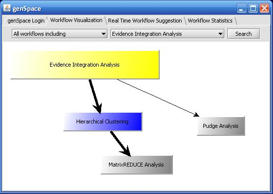
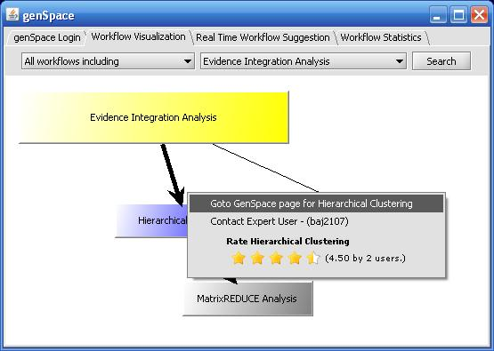

genSpace: Workflow Visualization
To see visualizations of workflows that have been recorded by genSpace,
choose "genSpace" from the geWorkbench "Tools" menu.
Then choose the "Workflow Visualization" tab.
Most Common Workflows
You can see the most common workflows conducted by other genSpace users by
choosing "Most common workflows starting with" or "Most common workflows including"
from the "select action" drop-down list. Then select the analysis tool that you are interested
in and click the "Search" button.
All Workflows
You can see all workflows including a particular analysis tool by choosing "All workflows including"
from the "select action" drop-down list and the analysis tool you are interested in from the "select tool"
drop-down list. Then click the "Search" button.
The visualization will show you the number of workflows found (indicated next to the "Search" button.
The analysis tool you suggested will appear highlighted in yellow.

To refine your search and limit the workflows to those including other analysis tools (in addition to the one
you selected initially), just click on a box representing another analysis tool. That analysis tool will appear highlighted
in blue, and the workflow will appear with bold arrows.

To deselect the highlighted analysis tool, just click on it again.
Rating Analysis Tools
To rate an analysis tool or to see additional information about an analysis tool on the genSpace wiki page, right-click
on the box representing the analysis tool to bring up a pop-up window.

Note that the "contact expert user" feature is currently disabled.